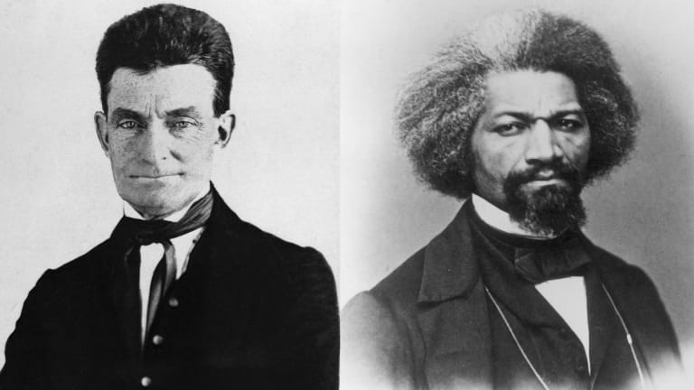

<!DOCTYPE html>
<html></html>
    <head>
        <meta charset="utf-8">
        <meta name="viewport" content="width=device-width, initial-scale=1">
    </head>
    <body style="background-color:#ffffff">
        <title>
            EXTRA. CREDIT. PLS.
        </title>
         <br>
        <h1>ABOLITION MOVMENTS</h1> <br> <br>
        <h2>
            The Abolition Movement was an era of a group of people boycotting to abolish slavery. <br>
            People with similar morals as Fredrick Douglas would go against dreadful conditions to <br>
            fight for what they would believe. They were fighting for the rights and freedom of <br>
            slaves. Of course, they were silenced due to the gag rule.  This is essential to our modern <br>
            world as slavery is still an occurring issue that needs to be addressed. <br>
            <br>
            During the Abolition Movement, a group of people would go out and speak about abolishing <br>
            slavery. An important figure that helped contribute to the Abolition Movement, was <br>
            Fredrick Douglas. With his public speaking, they had success in spreading awareness about <br>
            abolishing slavery. His talks consisted of experiences as an ex-slave which had influenced many. <br>
            Fredrick had talked in a respectful manner which most could bear with. Frederick has also gone <br>
            to Europe to further communicate his beliefs.<br>
            <br>
            Another important figure in the Abolition movement was John Brown. During John Brown’s life, he <br>
            had grown up anti-slavery. This has influenced John’s morals. What made John Brown different from <br>
            the rest of the abolitionists is that he had an aggressive approach to ending slavery. The man <br>
            had virtually forced people of the U.S to reconsider their morals on slavery. <br>
            <br>
            <br>
            <h3>
                Fredrick Douglas (left) and John Brown (right)
            </h3> <br> <br>
            <h2>
                Although you may say that the Abolition Movement didn’t completely end slavery and racism it did <br>
            spread awareness about it. Many more voices are now present in discussions about slavery. It has <br>
            led to the passing of the 13th Amendment. The 13th Amendment has essentially abolished slavery which <br>
            is quite a pro. But this hasn’t eliminated the social aspect of it. Racist comments still linger <br>
            in today’s society. Thankfully we have an Abolition Movement of our time as well, Black Lives Matter protests. <br>
            In conclusion, the Abolition Movement has dramatically affected our everyday lives. Some important <br>
            figures such as John Brown and Fredrick Douglas has helped touch these ideas. As shown through this article. <br>
            </h2>
            

        </h2>
        </div>
    </body>
</html>


